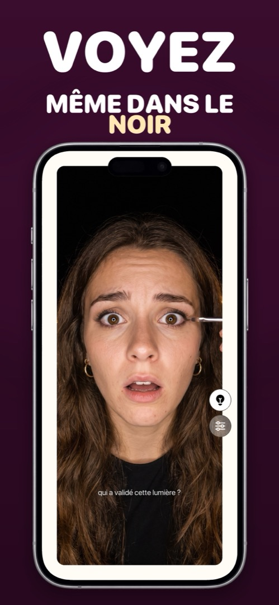

Une application miroir avec lumière — pour les voitures sombres, les salles de bain mal éclairées et les fins de soirée
Les moments où vous avez le plus besoin d’un miroir sont ceux où il n’y a pas de lumière correcte : la voiture avant d’entrer, les toilettes d’un restaurant éclairées par une seule ampoule d’ambiance, une chambre d’hôtel à 6 h du matin, le dernier rang au cinéma. Une application miroir avec lumière intégrée résout ça d’une manière dont la lampe torche de l’iPhone est incapable.
Pourquoi la lampe torche n’aide pas
Le flash LED de l’iPhone est à l’arrière, à côté des caméras arrière. La caméra frontale n’a aucune LED — quand vous prenez un selfie dans le noir, iOS fait brièvement flasher tout l’écran en blanc (Apple appelle ça le flash Retina). Ça fonctionne pour une photo, mais ça ne s’allume qu’une fraction de seconde quand vous appuyez sur le déclencheur. Impossible de le garder allumé pour se regarder.
L’écran, c’est la lumière
L’astuce d’une bonne application miroir, c’est celle du flash Retina, mais maintenue en permanence : les bords de l’écran s’illuminent à luminosité maximale, et l’écran devient un petit anneau lumineux pointé droit sur votre visage. Comme la lumière entoure la caméra, elle est uniforme et sans ombre — plus proche d’un miroir de maquillage que d’une torche de téléphone. Une bonne application vous laisse aussi réchauffer ou refroidir la lumière, parce qu’un fond de teint ne rend pas pareil sous une ampoule chaude qu’à la lumière du jour.
En tirer le meilleur
- Distance : 20 à 30 cm du visage. Plus près, la lumière est dure ; plus loin, elle faiblit vite.
- Évitez le contre-jour : pas de fenêtre ni de lampe derrière vous — la caméra expose pour l’arrière-plan et votre visage devient sombre.
- Luminosité : une application miroir doit la mettre au maximum toute seule. En mode Économie d’énergie, le plafond est plus bas : désactivez-le un instant s’il vous faut chaque parcelle de lumière.
- Combinez avec le zoom pour l’eye-liner, les lentilles et les dents — lumière plus grossissement, c’est ce dont on a vraiment besoin dans une salle de bain sombre.
Comment faire dans Mirrorly
C’est l’anneau lumineux de Mirrorly. Pour l’utiliser :
- Ouvrez Mirrorly. La luminosité de l’écran passe d’elle-même au maximum.
- Touchez le bouton ampoule. Le bord de l’écran devient un anneau lumineux et éclaire votre visage. (Si Mirrorly détecte un mauvais éclairage, il vous le suggère de lui-même.)
- Ouvrez les réglages (icône des curseurs) pour rendre la lumière plus chaude ou plus froide.
- Tenez le téléphone à une main de distance environ, face à vous, sans source lumineuse derrière. Touchez à nouveau l’ampoule pour éteindre.

Mirrorly est gratuit à l’essai sur l’App Store. Un miroir plein écran pour iPhone avec anneau lumineux, zoom et luminosité maximale. Trois vérifications gratuites, puis un achat unique — sans abonnement, sans photo enregistrée, sans compte, sans publicité.